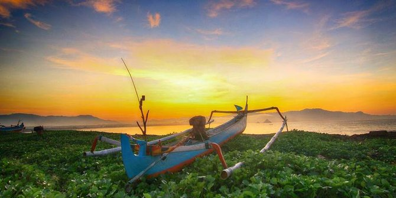

Pantai Papuma
Pantai Papuma Jember merupakan salah satu wisata pantai yang dimiliki Jawa Timur. Nama Papuma sendiri sebenarnya adalah sebuah singkatan dari “Pasir Putih Malikan”. Dan singkatan tersebut lah yang hingga kini lebih familiar di telinga wisatawan.

Pantai Payangan
Pantai Payangan salah satu pantai di Jember yang sangat unik dan menarik perhatian banyak wisatawan. Keunikan di Pantai Payangan adalah adanya 4 pantai,3 bukit,dan 1 pulau di sekitar kawasan wisata ini.
Pantai Bandealit
Pantai Bandealit merupakan wisata pantai yang memiliki keindahan yang masih alami dan jarang terjamah di kota jember, meski keindahan pantai bandealit ini tidak sepopuler pantai papuma di jember